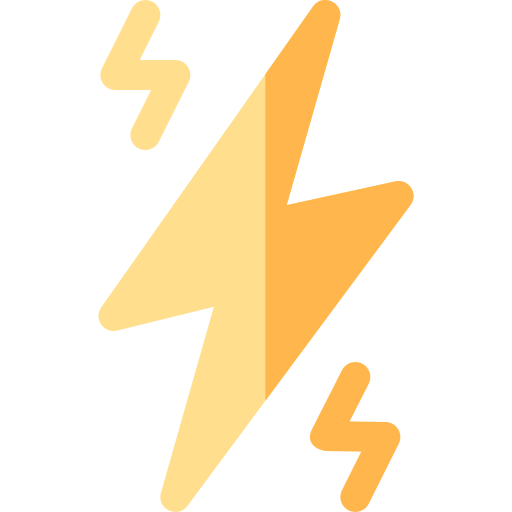

<div class="main">
    <div class="navbar">
        <div class="featuresHeading">Feature Comparison</div>
        <div class="featureslist">
            <div class="feature" (click)="showFeatureComponent('waveform')" [ngClass]="isActive === 'waveform' ? 'feature-active' : ''">
                <div style="display: flex">
                    
                </div>
                <div>Wave Forms</div>
            </div>
            <div class="feature" (click)="showFeatureComponent('timestamp')" [ngClass]="isActive === 'timestamp' ? 'feature-active' : ''">
                <div style="display: flex">
                    
                </div>
                <div>Time stamps</div>
            </div>
            <div class="feature" (click)="showFeatureComponent('energy')" [ngClass]="isActive === 'energy' ? 'feature-active' : ''">
                <div style="display: flex">
                    
                </div>
                <div>Log Energy</div>
            </div>
            <div class="feature" (click)="showFeatureComponent('autocorrelation')" [ngClass]="isActive === 'autocorrelation' ? 'feature-active' : ''">
                <div style="display: flex">
                    
                </div>
                <div>Autocorrelation</div>
            </div>
        </div>
    </div>
    <div class="datadisplay">
        <div *ngIf="isActive === 'waveform'">
            <app-waveforms></app-waveforms>
        </div>
        <div *ngIf="isActive === 'timestamp'">
            <app-timestamps></app-timestamps>
        </div>
        <div *ngIf="isActive === 'energy'">
            <app-engery-graph [data]="data" (audioGraphChanged)="updateData($event)"></app-engery-graph>
        </div>
        <div *ngIf="isActive === 'autocorrelation'">
            <app-autocorrelation [data]="data" (audioGraphChanged)="updateData($event)"></app-autocorrelation>
        </div>
    </div>
</div>